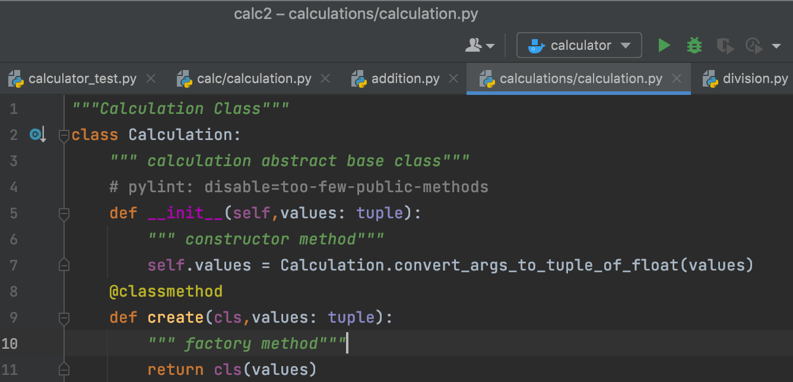

Inheritance is the most important aspect of object-oriented programming, which simulates the real-world concept of inheritance. It specifies that the child object acquires all the properties and behaviors of the parent object.
By using inheritance, we can create a class which uses all the properties and behavior of another class. The new class is known as a derived class or child class, and the one whose properties are acquired is known as a base class or parent class. It provides the re-usability of the code. So in the above code , We created a class Calculation in that class we are passing the values to that argument.
Encapsulation is one of the fundamental concepts in object-oriented programming (OOP). It describes the idea of wrapping data and the methods that work on data within one unit. This puts restrictions on accessing variables and methods directly and can prevent the accidental modification of data. To prevent accidental change, an object’s variable can only be changed by an object’s method. Those types of variables are known as private variable.
Encapsulation is also an essential aspect of object-oriented programming. It is used to restrict access to methods and variables. In encapsulation, code and data are wrapped together within a single unit from being modified by accident.
Polymorphism is an ability (in OOP) to use a common interface for multiple forms (data types). Suppose, we need to color a shape, there are multiple shape options (rectangle, square, circle). However we could use the same method to color any shape. This concept is called Polymorphism.
In the above example, there are four methods with different parameters. The method is selected based on the arguments passed to the method. When you call the add method with two long values, python searches for an add method with two long parameters. Same as long, using the parameters python selects the suitable method for that arguments.
Hiding the implementation. Python doesn't support abstract class, interface concept like other programming language. But if there is any restriction to use that then we can implement by using "pass" keyword.
So in the above image as you can see , we are using "pass" keyword to implement abstraction for our calculator. We also imported methods 'ABC' and abstractmethod from the module 'abc'. These methods will allow us to create our abstract class. We then created the class Stock as you would typically create any class, although in this case, we call the method ABC in the parentheses.